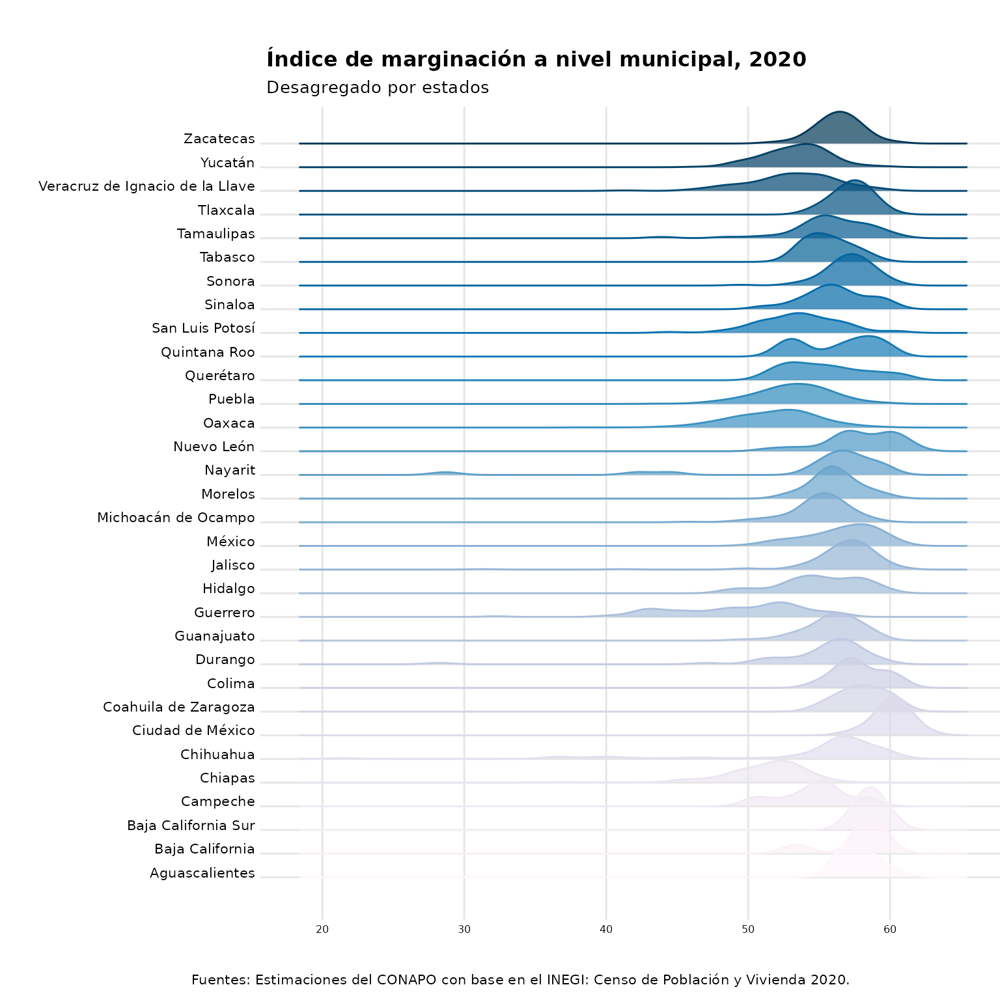
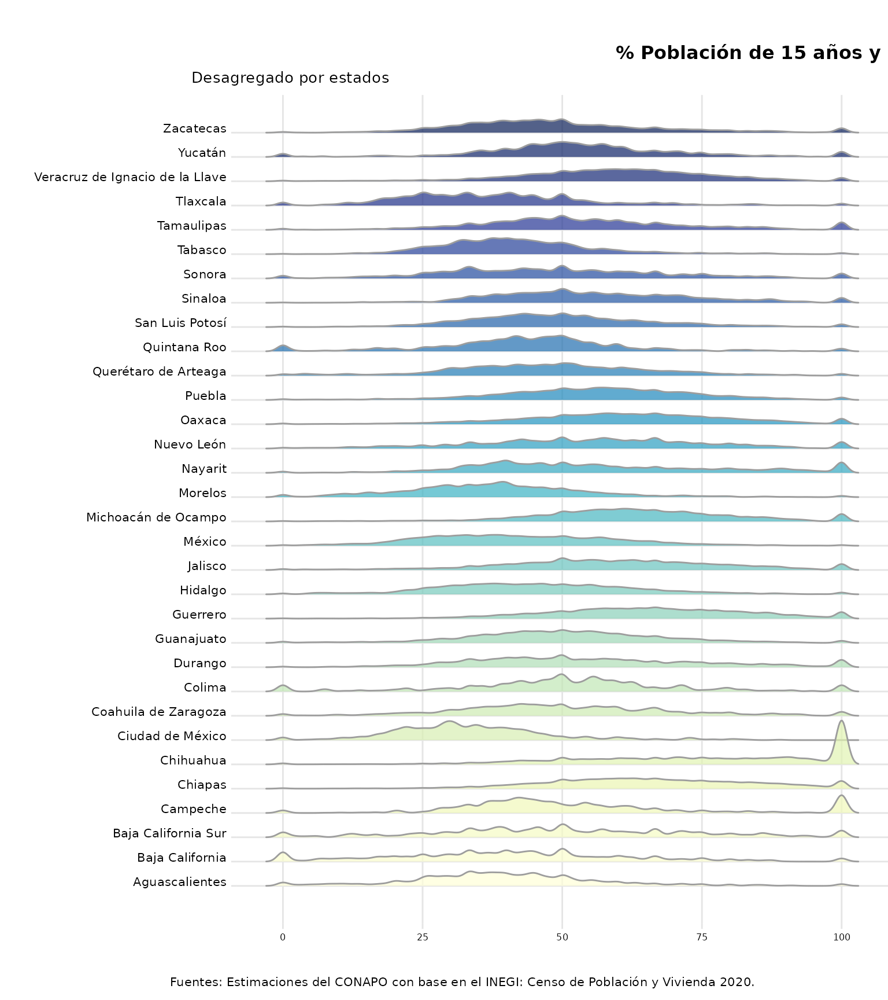

IME_distribution.Rmd
library(ggplot2)
library(ggridges)
library(dplyr)
library(IM2020)
library(RColorBrewer)
data(IMM_2020)
IMM_2020 %>%
ggplot() +
geom_density_ridges(aes(x = IM_2020, y = NOM_ENT, fill = NOM_ENT, color = NOM_ENT),
alpha = 0.7,
rel_min_height = 0,
bandwidth = 1) +
theme_ridges() +
theme(plot.title = element_text(size = 12),
plot.subtitle = element_text(size = 10),
plot.margin = margin(t = 1, r = 0, b = 0, l = 0, "cm"),
plot.caption = element_text(size = 8, hjust = -1, vjust = 5),
axis.text.y = element_text(size = 8),
axis.text.x = element_text(size = 6)) +
scale_y_discrete(expand = c(0.05, 0)) +
scale_fill_manual(values = colorRampPalette(brewer.pal(9, "PuBu"))(32)) +
scale_color_manual(values = colorRampPalette(brewer.pal(9, "PuBu"))(32)) +
guides(color = 'none', fill = 'none') +
coord_cartesian(clip = "off") +
labs(title = "Índice de marginación a nivel municipal, 2020",
subtitle = "Desagregado por estados",
x = "",
y = "",
caption = expression(paste("Fuentes: Estimaciones del CONAPO con base en el INEGI: Censo de Población y Vivienda 2020.")))
data(IML_2020)
IML_2020 %>%
ggplot() +
geom_density_ridges(aes(x = SBASC, y = NOM_ENT, fill = NOM_ENT),
color = "#9D9D9D",
alpha = 0.7,
rel_min_height = 0,
bandwidth = 1) +
theme_ridges() +
theme(plot.title = element_text(size = 12, hjust = -3),
plot.subtitle = element_text(size = 10, hjust = -0.1),
plot.margin = margin(t = 1, r = 0, b = 0, l = 0, "cm"),
plot.caption = element_text(size = 8, hjust = -1, vjust = 5),
axis.text.y = element_text(size = 8),
axis.text.x = element_text(size = 6)) +
scale_y_discrete(expand = c(0.05, 0)) +
scale_fill_manual(values = colorRampPalette(brewer.pal(9, "YlGnBu"))(32)) +
guides(color = 'none', fill = 'none') +
coord_cartesian(clip = "off") +
labs(title = "% Población de 15 años y más sin educación básica a nivel localidad, 2020",
subtitle = "Desagregado por estados",
x = "",
y = "",
caption = expression(paste("Fuentes: Estimaciones del CONAPO con base en el INEGI: Censo de Población y Vivienda 2020.")))